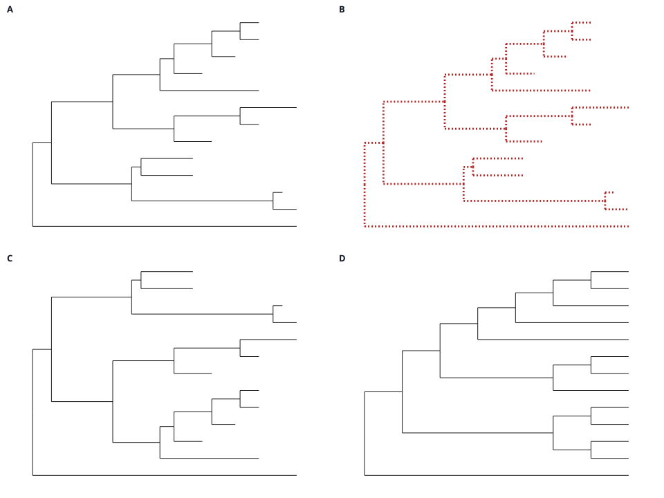
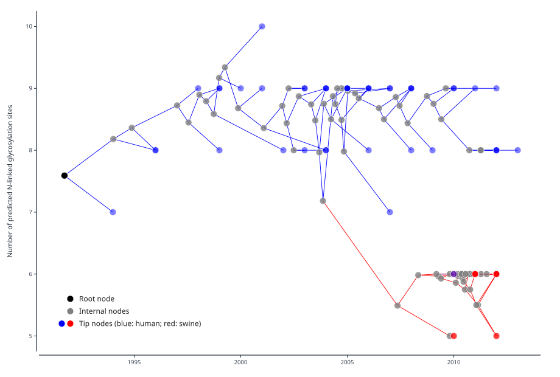
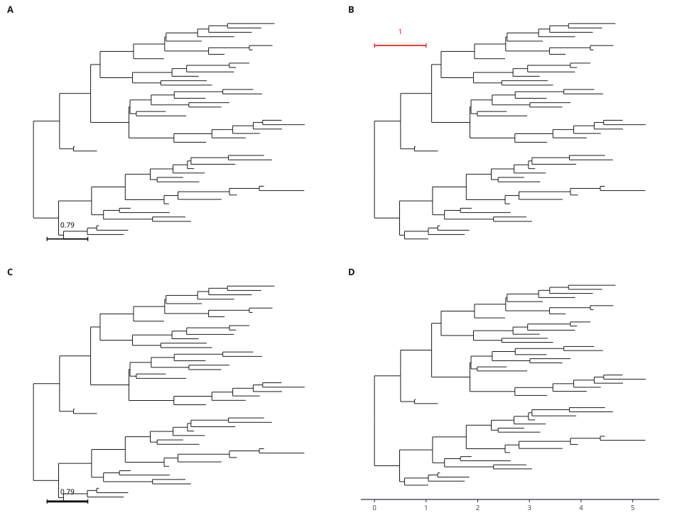
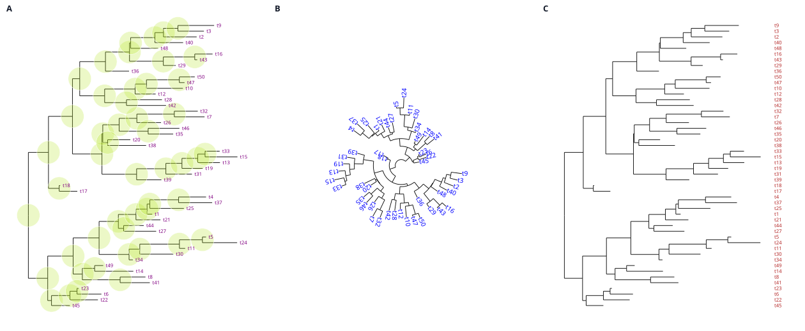
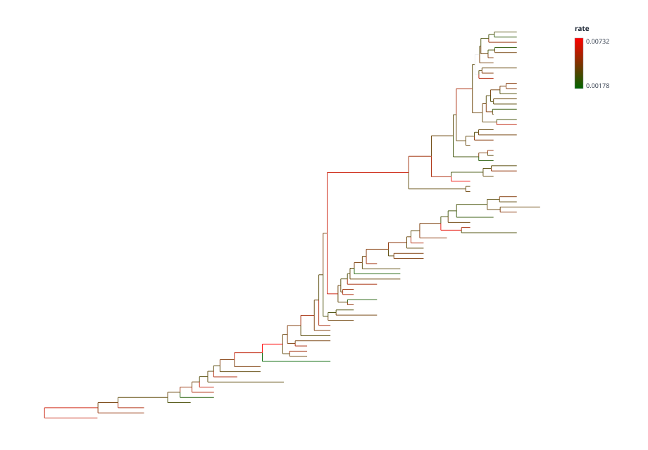
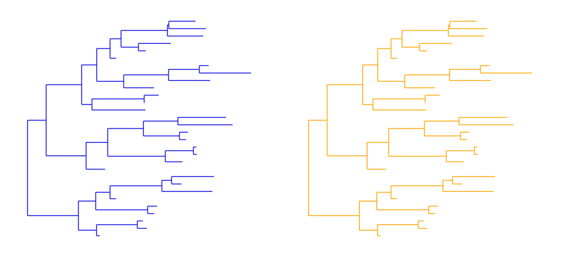
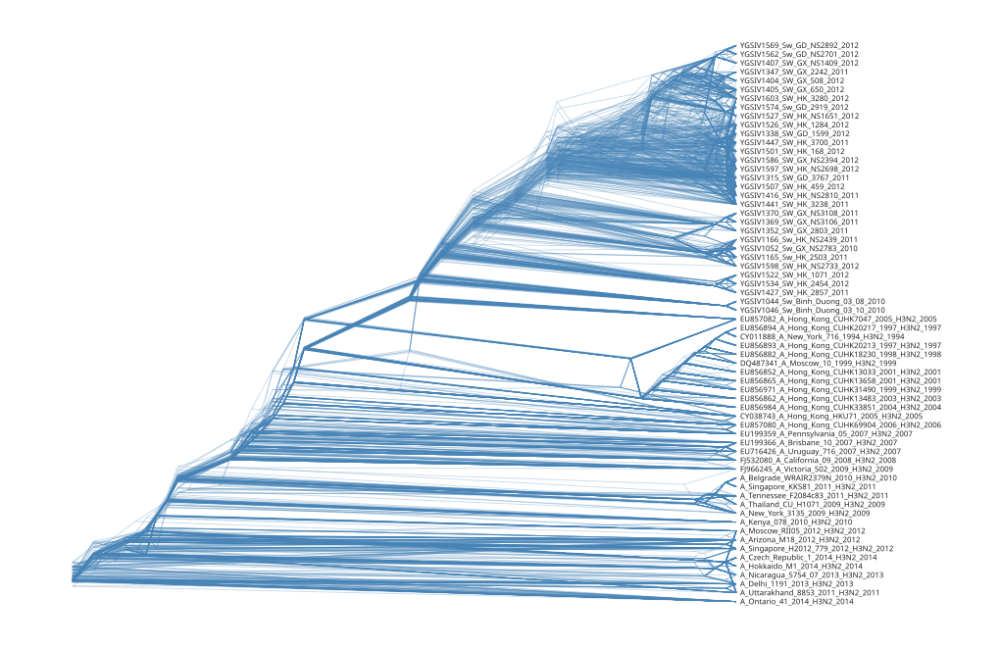

4. Phylogenetic Tree Visualization
Visualizing evolutionary relationships effectively relies on choosing the right coordinate geometry, visual hierarchy, theme, and time axis. Extending ggplot2's layered grammar, ggtree() turns any Phylo, TreeData, or Hclust into a customizable SVG/PNG canvas.
4.1 Visualizing Phylogenetic Tree with ggtree
The ggtree() function is a specialized wrapper around ggplot() + geom_tree() + theme_tree() with built-in support for ladderization, cladograms (branch_length='none'), and uniform branch styling.

▶ Show / Hide Python Code ggplotggtreegeom_treetheme_tree
from ggtree import (
aes,
geom_tree,
ggplot,
ggtree,
plot_list,
read_tree,
system_file,
theme_tree,
)
nwk = system_file("extdata", "sample.nwk")
tree = read_tree(nwk)
p1 = ggplot(tree, aes("x", "y")) + geom_tree() + theme_tree()
p2 = ggtree(tree, color="firebrick", size=2, linetype="dotted")
p3 = ggtree(tree, ladderize=False)
p4 = ggtree(tree, branch_length="none")
plot_list(p1, p2, p3, p4, ncol=2, tag_levels="A")
4.2 Layouts and Derived Coordinate Systems
Supported layouts span phylograms and cladograms across rectangular, roundrect, slanted, ellipse, circular, fan, equal_angle, and daylight, plus derived orientations via scale_x_reverse(), coord_flip(), layout_dendrogram(), layout_inward_circular(), and rotated insets via as_ggplot().

▶ Show / Hide Python Code ggtreertreeset_seedplot_list
from ggtree import ggtree, plot_list, rtree, set_seed
set_seed(2017 - 2 - 16)
tree = rtree(50)
pA = ggtree(tree)
pB = ggtree(tree, layout="roundrect")
pC = ggtree(tree, layout="slanted")
pD = ggtree(tree, layout="ellipse")
pE = ggtree(tree, layout="circular")
pF = ggtree(tree, layout="fan", open_angle=120)
pG = ggtree(tree, layout="equal_angle")
pH = ggtree(tree, layout="daylight")
pI = ggtree(tree, branch_length="none")
pJ = ggtree(tree, layout="ellipse", branch_length="none")
pK = ggtree(tree, branch_length="none", layout="circular")
pL = ggtree(tree, layout="daylight", branch_length="none")
return plot_list(
pA, pB, pC, pD, pE, pF, pG, pH, pI, pJ, pK, pL,
ncol=4,
tag_levels="A",
)

▶ Show / Hide Python Code ggtreescale_x_reversecoord_fliplayout_dendrogram
from ggtree import (
as_ggplot,
coord_flip,
ggtree,
layout_dendrogram,
layout_inward_circular,
plot_list,
rtree,
scale_x_reverse,
set_seed,
xlim,
)
set_seed(2017 - 2 - 16)
tree = rtree(50)
pA = ggtree(tree) + scale_x_reverse()
pB = ggtree(tree) + coord_flip()
pC = ggtree(tree) + layout_dendrogram()
pD = as_ggplot(ggtree(tree), angle=-30, scale=0.9)
pE = ggtree(tree, layout="slanted") + coord_flip()
pF = ggtree(tree, layout="slanted", branch_length="none") + layout_dendrogram()
pG = ggtree(tree, layout="circular") + xlim(-10, None)
pH = ggtree(tree) + layout_inward_circular()
pI = ggtree(tree) + layout_inward_circular(xlim=15)
return plot_list(
pA, pB, pC, pD, pE, pF, pG, pH, pI,
ncol=3,
tag_levels="A",
)
4.2.2–4.2.3 Time-Scaled Trees and Two-Dimensional Layouts
Specifying the most recent sampling date (mrsd) calibrates horizontal coordinates in calendar years, and setting yscale with yscale_mapping projects trees into two-dimensional trait-by-time space.

▶ Show / Hide Python Code read_beastggtreetheme_tree2
from ggtree import ggtree, read_beast, system_file, theme_tree2
beast_file = system_file("extdata", "MCC_FluA_H3.tree")
beast_tree = read_beast(beast_file)
ggtree(beast_tree, mrsd="2013-01-01") + theme_tree2()

▶ Show / Hide Python Code read_beastgroupOTUggtreetheme_classic
from ggtree import (
aes,
annotate,
geom_nodepoint,
geom_rootpoint,
geom_tippoint,
ggtree,
groupOTU,
read_beast,
scale_color_manual,
system_file,
theme,
theme_classic,
ylab,
)
beast_file = system_file("extdata", "MCC_FluA_H3.tree")
beast_tree = read_beast(beast_file)
nag_file = system_file("extdata", "NAG_inHA1.txt")
with open(nag_file, encoding="utf-8") as fh:
rows = [line.strip().split("\t") for line in fh if line.strip()]
nag = {r[0]: float(r[1]) for r in rows}
tips = beast_tree.phylo.tip_label
swine_tips = [t for t in tips if "Swine" in t]
beast_tree = groupOTU(beast_tree, swine_tips, group_name="host")
p = (
ggtree(beast_tree, aes(color="host"), mrsd="2013-01-01", yscale="label", yscale_mapping=nag)
+ theme_classic()
+ theme(legend_position="none")
+ scale_color_manual(values=["blue", "red"], labels=["human", "swine"])
+ ylab("Number of predicted N-linked glycosylation sites")
)
return (
p
+ geom_nodepoint(color="grey", size=3, alpha=0.8)
+ geom_rootpoint(color="black", size=3)
+ geom_tippoint(size=3, alpha=0.5)
+ annotate("point", 1992, 5.6, size=3, color="black")
+ annotate("point", 1992, 5.4, size=3, color="grey")
+ annotate("point", 1991.6, 5.2, size=3, color="blue")
+ annotate("point", 1992, 5.2, size=3, color="red")
+ annotate("text", 1992.3, 5.6, hjust=0, size=4, label="Root node")
+ annotate("text", 1992.3, 5.4, hjust=0, size=4, label="Internal nodes")
+ annotate("text", 1992.3, 5.2, hjust=0, size=4, label="Tip nodes (blue: human; red: swine)")
)
4.3.1–4.3.4 Scale Bars, Nodes, Labels, and Root Edges
Add evolutionary distance bars with geom_treescale() or axis ticks with theme_tree2(), mark internal and tip nodes with geom_nodepoint() and geom_tippoint(), format radial or y-axis tip labels via geom_tiplab(), and draw outgroup stems via geom_rootedge().

▶ Show / Hide Python Code ggtreegeom_treescaletheme_tree2plot_list
from ggtree import geom_treescale, ggtree, plot_list, rtree, set_seed, theme_tree2
set_seed(2017 - 2 - 16)
tree = rtree(50)
p1 = ggtree(tree) + geom_treescale()
p2 = ggtree(tree) + geom_treescale(x=0, y=45, width=1, color="red")
p3 = ggtree(tree) + geom_treescale(fontsize=6, linesize=2, offset=1)
p4 = ggtree(tree) + theme_tree2()
plot_list(p1, p2, p3, p4, ncol=2, tag_levels="A")

▶ Show / Hide Python Code ggtreegeom_pointgeom_nodepointgeom_tippoint
from ggtree import (
aes,
geom_nodepoint,
geom_point,
geom_tippoint,
ggtree,
plot_list,
rtree,
set_seed,
)
set_seed(2017 - 2 - 16)
tree = rtree(50)
p1 = ggtree(tree) + geom_point(aes(shape="isTip", color="isTip"), size=3)
p2 = (
ggtree(tree)
+ geom_nodepoint(color="#b5e521", alpha=1 / 4, size=10)
+ geom_tippoint(color="#FDAC4F", shape=8, size=3)
)
plot_list(p1, p2, ncol=2, tag_levels="A")

▶ Show / Hide Python Code ggtreegeom_tiplabgeom_nodepointplot_list
from ggtree import aes, geom_nodepoint, geom_tiplab, ggtree, plot_list, rtree, set_seed
set_seed(2017 - 2 - 16)
tree = rtree(50)
p1 = (
ggtree(tree)
+ geom_nodepoint(color="#b5e521", alpha=1 / 4, size=10)
+ geom_tiplab(size=3, color="purple")
)
p2 = ggtree(tree, layout="circular") + geom_tiplab(aes(angle="angle"), color="blue")
p3 = ggtree(tree) + geom_tiplab(as_ylab=True, color="firebrick")
plot_list(p1, p2, p3, ncol=3, tag_levels="A")

▶ Show / Hide Python Code read_treeggtreegeom_tiplabgeom_rootedge
from ggtree import geom_rootedge, geom_tiplab, ggtree, plot_list, read_tree
tree1 = read_tree(text="((A:1,B:2):3,C:2):1;")
pA = ggtree(tree1) + geom_tiplab() + geom_rootedge()
tree2 = read_tree(text="((A:1,B:2):3,C:2);")
pB = ggtree(tree2) + geom_tiplab() + geom_rootedge()
tree3 = read_tree(text="((A:1,B:2):3,C:2);")
tree3.root_edge = 2
pC = ggtree(tree3) + geom_tiplab() + geom_rootedge()
pD = ggtree(tree2) + geom_tiplab() + geom_rootedge(rootedge=3)
plot_list(pA, pB, pC, pD, ncol=2, tag_levels="A")
4.3.5 Coloring Branches and Continuous Trait Transitions
Map node rates continuously along tree branches, reconstruct ancestral continuous states with fastAnc() for interpolated branch transitions (continuous='colour'), and render trait phenograms via yscale='trait'.

▶ Show / Hide Python Code read_beastggtreescale_color_continuoustheme
from ggtree import aes, ggtree, read_beast, scale_color_continuous, system_file, theme
beast_file = system_file("extdata", "MCC_FluA_H3.tree")
beast_tree = read_beast(beast_file)
return (
ggtree(beast_tree, aes(color="rate"))
+ scale_color_continuous(low="darkgreen", high="red")
+ theme(legend_position="right")
)

▶ Show / Hide Python Code read_treefastAncnodeidfull_join
from ggtree import (
DataFrame,
aes,
fastAnc,
full_join,
geom_tiplab,
geom_tree,
ggtree,
nodeid,
plot_list,
read_tree,
scale_color_gradientn,
system_file,
theme,
xlim,
)
tree_anole = read_tree(system_file("extdata", "TDbook", "tree_anole.nwk"))
svl_path = system_file("extdata", "TDbook", "df_svl.tsv")
with open(svl_path, encoding="utf-8") as fh:
lines = [line.strip() for line in fh if line.strip()]
svl = {k: float(v) for line in lines[1:] for k, v in [line.split("\t")]}
fit = fastAnc(tree_anole, svl, vars=True, CI=True)
tip_names = list(svl.keys())
tip_nodes = nodeid(tree_anole, tip_names)
td_nodes = [int(n) for n in tip_nodes]
td_vals = [svl[name] for name in tip_names]
nd_nodes = [int(n) for n in fit.ace.keys()]
nd_vals = [float(v) for v in fit.ace.values()]
d = DataFrame({"node": td_nodes + nd_nodes, "trait": td_vals + nd_vals})
tree = full_join(tree_anole, d, by="node")
cols = ["red", "orange", "green", "cyan", "blue"]
p1 = (
ggtree(tree, aes(color="trait"), layout="circular", ladderize=False, continuous="colour", size=2)
+ scale_color_gradientn(colours=cols)
+ geom_tiplab(hjust=-0.1)
+ xlim(0, 1.2)
+ theme(legend_position=(0.05, 0.85))
)
p2 = (
ggtree(tree, layout="circular", ladderize=False, size=2.8)
+ geom_tree(aes(color="trait"), continuous="colour", size=2)
+ scale_color_gradientn(colours=cols)
+ geom_tiplab(aes(color="trait"), hjust=-0.1)
+ xlim(0, 1.2)
+ theme(legend_position=(0.05, 0.85))
)
plot_list(p1, p2, ncol=2, tag_levels="A")

▶ Show / Hide Python Code fastAncfull_joinggtreescale_color_viridis_c
from ggtree import (
DataFrame,
aes,
fastAnc,
full_join,
ggtree,
nodeid,
read_tree,
scale_color_viridis_c,
system_file,
theme_minimal,
)
tree_anole = read_tree(system_file("extdata", "TDbook", "tree_anole.nwk"))
svl_path = system_file("extdata", "TDbook", "df_svl.tsv")
with open(svl_path, encoding="utf-8") as fh:
lines = [line.strip() for line in fh if line.strip()]
svl = {k: float(v) for line in lines[1:] for k, v in [line.split("\t")]}
fit = fastAnc(tree_anole, svl, vars=True, CI=True)
tip_names = list(svl.keys())
td_nodes = [int(n) for n in nodeid(tree_anole, tip_names)]
td_vals = [svl[name] for name in tip_names]
nd_nodes = [int(n) for n in fit.ace.keys()]
nd_vals = [float(v) for v in fit.ace.values()]
d = DataFrame({"node": td_nodes + nd_nodes, "trait": td_vals + nd_vals})
tree = full_join(tree_anole, d, by="node")
return (
ggtree(tree, aes(color="trait"), continuous="colour", yscale="trait")
+ scale_color_viridis_c()
+ theme_minimal()
)
4.3.6–4.3.7 Rescaling Branches and Customizing Themes
Rescale branch lengths by any numeric node variable (substitution rate or dN_vs_dS) and customize background canvas colors through theme_tree() and theme modifiers.

▶ Show / Hide Python Code read_beastread_codeml_mlcggtreetheme_tree2
from ggtree import (
ggtree,
labs,
plot_list,
read_beast,
read_codeml_mlc,
system_file,
theme_tree2,
)
beast_file = system_file("extdata", "MCC_FluA_H3.tree")
beast_tree = read_beast(beast_file)
p1 = ggtree(beast_tree, mrsd="2013-01-01") + theme_tree2() + labs(caption="Divergence time")
p2 = ggtree(beast_tree, branch_length="rate") + theme_tree2() + labs(caption="Substitution rate")
mlcfile = system_file("extdata", "treeio", "PAML_Codeml", "mlc")
mlc_tree = read_codeml_mlc(mlcfile)
p3 = ggtree(mlc_tree) + theme_tree2() + labs(caption="nucleotide substitutions per codon")
p4 = ggtree(mlc_tree, branch_length="dN_vs_dS") + theme_tree2() + labs(caption="dN/dS tree")
plot_list(p1, p2, p3, p4, ncol=2, tag_levels="A")

▶ Show / Hide Python Code ggtreetheme_treertreeset_seed
from ggtree import ggtree, plot_list, rtree, set_seed, theme_tree
set_seed(2019)
x = rtree(30)
p1 = ggtree(x, color="#0808E5", size=1) + theme_tree("#FEE4E9")
p2 = ggtree(x, color="orange", size=1) + theme_tree("grey30")
plot_list(p1, p2, ncol=2)
4.4 Visualizing a List of Trees (multiPhylo, TreeDataList, DensiTree)
Visualize multiple dated, bootstrapped, or annotated trees simultaneously via facet_wrap('~.id') with per-panel aesthetic filtering (td_filter(), new_scale_colour()), or stack ensembles in ggdensitree().

▶ Show / Hide Python Code read_r8sggtreefacet_wraptheme_tree2
from ggtree import facet_wrap, ggtree, read_r8s, system_file, theme_tree2
r8s = read_r8s(system_file("extdata", "r8s", "H3_r8s_output.log"))
ggtree(r8s) + facet_wrap("~.id", scales="free") + theme_tree2()

▶ Show / Hide Python Code read_treeggtreefacet_wrap
from ggtree import facet_wrap, ggtree, read_tree, system_file
btrees = read_tree(system_file("extdata", "RAxML", "RAxML_bootstrap.H3"))
ggtree(btrees) + facet_wrap("~.id", ncol=10)

▶ Show / Hide Python Code TreeDataListfacet_wrapgeom_tippointtd_filter
import numpy as np
from ggtree import (
DataFrame,
TreeDataList,
aes,
facet_wrap,
full_join,
geom_tippoint,
ggtree,
new_scale_colour,
rtree,
scale_colour_gradient,
scale_colour_viridis_c,
set_seed,
td_filter,
)
set_seed(2020)
rng = np.random.default_rng(2020)
x = rtree(30)
d = DataFrame(
{
"label": x.tip_label,
"var1": np.abs(rng.normal(size=30)).tolist(),
"var2": np.abs(rng.normal(size=30)).tolist(),
}
)
tree = full_join(x, d, by="label")
trs = TreeDataList({"TREE1": tree, "TREE2": tree})
return (
ggtree(trs)
+ facet_wrap("~.id")
+ geom_tippoint(aes(subset='.id == "TREE1"', colour="var1"))
+ scale_colour_gradient(low="blue", high="red")
+ new_scale_colour()
+ geom_tippoint(aes(colour="var2"), data=td_filter('.id == "TREE2"'))
+ scale_colour_viridis_c()
)

▶ Show / Hide Python Code read_treeggdensitreegeom_tiplabhexpand
from ggtree import geom_tiplab, ggdensitree, hexpand, read_tree, system_file
btrees = read_tree(system_file("extdata", "RAxML", "RAxML_bootstrap.H3"))
return (
ggdensitree(btrees, alpha=0.3, colour="steelblue")
+ geom_tiplab(size=3)
+ hexpand(0.35)
)